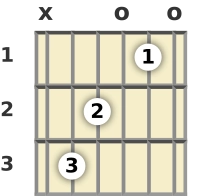
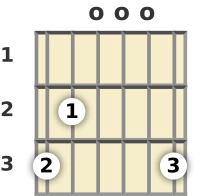
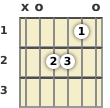

Primeira Música
Agora que você já conhece alguns acordes, está na hora de tentar tocar sua primeira música. Escolha uma música simples e pratique devagar, prestando atenção na troca entre os acordes.
Vamos começar com uma música mais simples:
Acima do sol:
Escolhi essa música pois ela tem poucos acordes, é famosa e tambem muito simples de tocar.
Acesse esse link para ter mais informações da música:
Acessar cifra de Acima do solAcordes utilizados
Os acordes utilizados nessa música são:
Dó maior (C)

Sol maior (G)

Lá menor (Am)

Como praticar
- Aprenda cada acorde separadamente.
- Pratique a troca entre os dois acordes.
- Aprenda a batida ritmo da música no site ali em cima.
- Comece a tocar os acordes lentamente.
- Aumente a velocidade aos poucos.
- Pratique até conseguir tocar sem parar.
- Após isso cante junto.